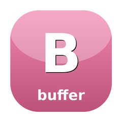

SugarCellBuffer
Cell-grid value objects for terminal rendering

Immutable Buffer (2-D cell grid) and Cell (rune, style, hyperlink, width) value objects: the shared data model that SugarCraft renderers paint into. Each mutation returns a new buffer, Buffer::diff() reduces two frames to the minimal operation list, and DiffEncoder turns that list into a self-contained ANSI byte stream. It mirrors the terminal cell buffer of charmbracelet/x/cellbuf, with the mutable grid replaced by value semantics.
Install
composer require sugarcraft/sugar-cellbufferRequires PHP ^8.3. The package ships only a dev-master line on Packagist, so consumers without minimum-stability: dev pin it explicitly with composer require sugarcraft/sugar-cellbuffer:@dev. Inside the monorepo, a path repository on the sugar-cellbuffer/ directory is the alternative.
Quickstart
<?php
require 'vendor/autoload.php';
use SugarCraft\CellBuffer\Buffer;
use SugarCraft\CellBuffer\Cell;
use SugarCraft\CellBuffer\Position;
use SugarCraft\CellBuffer\Region;
// Create a 20x3 buffer filled with blank cells.
$buf = Buffer::new(20, 3);
// Set a cell at (col=5, row=1).
$buf = $buf->withCellAt(5, 1, Cell::new('H'));
// Blit a seeded 2x2 sub-buffer at origin — seeding matters: blitting an
// all-blank sub-buffer over blank cells is a visible no-op.
$sub = Buffer::new(2, 2);
$sub = $sub->withCellAt(0, 0, Cell::new('A'))->withCellAt(1, 0, Cell::new('B'));
$sub = $sub->withCellAt(0, 1, Cell::new('C'))->withCellAt(1, 1, Cell::new('D'));
$buf = $buf->withRegion(Region::new(Position::new(0, 0), 2, 2), $sub);
// Read a cell back.
$cell = $buf->cellAt(5, 1);
echo $cell->rune(); // 'H'
// Access dimensions.
echo $buf->width(); // 20
echo $buf->height(); // 3Coordinates are zero-based (col, row). The CUP sequences the encoders emit are one-based, and toAnsi() ends each row with a bare LF, so write "\r\n" yourself when the output goes to a raw-mode terminal. The runnable version of this flow is examples/basic.php.
Concepts
A Buffer is a fixed width × height grid of Cell values stored row-major. Nothing is edited in place: withCellAt(), withRegion(), fill() and applyDiff() each return a new Buffer, so a previous frame stays valid while the next one is built. That is what makes frame-to-frame diffing cheap to reason about: you keep the last frame and diff the new one against it.
A Cell holds one grapheme as its rune, an optional Style (the pen), an optional Hyperlink (OSC 8), and a width. Width 1 is a normal cell, width 2 is a wide lead (CJK, many emoji) that owns the next column through a width-0 continuation cell, and larger widths are single run-length spans. The writing API keeps those pairs intact, so a half-pair never survives a public mutation.
Common tasks
Paint a frame and emit only what changed. Keep the previous frame and encode the difference in one call:
$bytes = $curr->diffToAnsi($prev); // CUP + SGR + literal runs, no full repaint
// or, when the op list is needed for inspection:
$ops = $curr->diff($prev);
$bytes = (new \SugarCraft\CellBuffer\Diff\DiffEncoder())->encode($ops);Build a frame in one pass. BufferBuilder is the mutable scratch for bulk work, and toBuffer() freezes it back into an immutable Buffer:
use SugarCraft\CellBuffer\Cell;
use SugarCraft\CellBuffer\Position;
use SugarCraft\CellBuffer\Region;
use SugarCraft\CellBuffer\Buffer;
$builder = Buffer::builder(10, 2)
->fillRect(Region::new(Position::new(0, 0), 10, 1), Cell::new('-'))
->setCellAt(0, 1, Cell::new('>'));
$frame = $builder->toBuffer();Place a wide glyph. Declare the width explicitly. Width is never measured for you, and withCellAt() writes the continuation partner to the right:
use SugarCraft\CellBuffer\Buffer;
use SugarCraft\CellBuffer\Cell;
$buf = Buffer::new(4, 1)->withCellAt(1, 0, Cell::new('中', null, null, 2));
// (1,0) carries the lead; (2,0) is now a continuation with width 0.
$buf->cellAt(2, 0)->width(); // 0Read a style back from SGR. Style::fromSgr() parses an SGR parameter string into a pen, and toAnsi() writes the pen back out:
use SugarCraft\CellBuffer\Style;
$pen = Style::fromSgr('1;38;5;196'); // bold, 256-color foreground
$pen?->hasBold(); // true
echo $pen?->toAnsi(); // a full SGR sequence, reset firstAttach a clickable link. Hyperlinks are validated when they are constructed, so hostile control bytes never reach the wire through this type:
use SugarCraft\CellBuffer\Cell;
use SugarCraft\CellBuffer\Hyperlink;
$link = Hyperlink::new('https://example.com/docs', 'docs-group');
$cell = Cell::new('d', null, $link);What's in the box
with*() family plus fill(), copy() and applyDiff(). Every mutation returns a new instance. Bounds-checked cellAt() throws OutOfRangeException.Cell::continuation() marks the neighbor of a wide lead. Derive changes with withRune(), withStyle(), withLink() and withWidth(), each of which returns a new cell.Position is a 2-D coordinate that admits negative values for relative offsets. Region is an origin plus width and height, with contains() for hit-testing. Zero-area regions are no-ops in fill() and withRegion().0xRRGGBB or as palette-slot identity (0-255), an underline color, and an attribute bitmask. fromSgr() parses SGR parameter strings back into styles, and toAnsi() writes them out.Buffer::diff() returns DiffOp objects (cursor moves, style changes, cell runs, REP and ECH runs, hyperlink changes). DiffOptimiser shapes that list, and DiffEncoder writes it as ANSI.API reference
| Class | Method | Description |
|---|---|---|
| Buffer | new(int $width, int $height) | Factory for a grid of blank cells |
| Buffer | fromString(?string $ansi, int $width, int $height) | Test-support parser: walks an ANSI string onto a grid. Lossy by contract, so do not use it as a terminal emulator |
| Buffer | fromStyledText(string $text, int $width, int $height) | Builds a grid from styled text |
| Buffer | fromGrid(int $width, int $height, array $grid) | Bulk wrap of exactly width × height cells. Skips pair enforcement, so the pair law is the caller's duty |
| Buffer | builder(int $width, int $height), toBuilder() | Returns a BufferBuilder for bulk edits, or converts an existing buffer to one |
| Buffer | cellAt(int $col, int $row), withCellAt(...) | Bounds-checked read, and the immutable single-cell write that enforces the wide-pair law |
| Buffer | withRegion(Region $region, Buffer $source) | Blits $source into $region, clipped to the intersection |
| Buffer | fill(Region $region, Cell $cell) | Paints a region with one cell |
| Buffer | copy(Region $region) | Extracts a region-sized buffer, padding out-of-grid area with blanks. Capped by Buffer::MAX_COPY_CELLS |
| Buffer | text(?Region $region = null) | Plain text of the grid or of a region. Runes are returned whatever their style |
| Buffer | diff(Buffer $previous), applyDiff(array $ops), diffToAnsi(Buffer $previous) | Minimal operation list between two frames, its inverse, and the one-call diff-and-encode |
| Buffer | toAnsi() | Full repaint of every cell, for terminals where delta output is not safe |
| Buffer | setRowPrefilterEnabled(bool $on), rowPrefilterEnabled() | Process-wide switch for the row prefilter used by the diff path. On by default |
| BufferBuilder | setCellAt(...), fillRect(...), toBuffer() | Mutable scratch for bulk construction. It shares the wide-pair placement rules with Buffer through the WidePairPlacement trait, so the two cannot diverge |
| Cell | new(string $rune = ' ', ?Style $style = null, ?Hyperlink $link = null, int $width = 1) | Constructs a cell. Negative widths are refused, and a span wider than 2 must measure exactly that many columns |
| Cell | continuation(), blank() | The width-0 partner of a wide lead, and the default padding cell |
| Cell | rune(), style(), link(), width(), equals(Cell $other) | Bare accessors and value equality |
| Cell | withRune(), withStyle(), withLink(), withWidth() | Derivations that return a new cell and re-fire the constructor checks |
| Style | new(?int $fg = null, ?int $bg = null, int $attrs = 0), bold(), reverse() | Convenience factories for RGB colors and the attribute bitmask |
| Style | fromSgr(string $params, ?Style $carry = null) | SGR parameter parser. Returns null only when nothing was set |
| Style | toAnsi(), equals(), valuesEqual() | One-shot SGR emission (via SgrEmitter) and value equality |
| Style | withAttrs(int), withBold() to withInvisible(), has*() predicates | Bitmask replacement, nine single-bit toggles, and their predicates |
| Hyperlink | new(string $url, string $id = ''), Hyperlink::CLOSE | Validated OSC 8 anchor and the close frame constant |
| Region | new(Position $origin, int $width, int $height), contains(int $col, int $row) | Rectangle with inclusive-edge right() and bottom() accessors |
| Position | new(int $col, int $row) | Coordinate pair with col() and row() |
| DiffEncoder | encode(array $ops) | Writes an operation list as ANSI. Every frame opens with an unconditional home CUP, so one instance can be reused across frames |
| DiffOptimiser | optimise(array $ops) | Runs at the end of Buffer::diff(). Last style wins, and adjacent same-state cells are coalesced |
| SgrEmitter | SgrEmitter::emit(?Style $style) | Turns a style into SGR bytes, preferring palette-slot identity over the RGB twin |
Configuration and limits
The package has no configuration file or environment variables. Its tunable surface is a handful of constructor-time values and class-level limits:
| Setting | Type | Default | Effect |
|---|---|---|---|
| Buffer width and height | int, int | none (required) | Grid dimensions. Dimensions are trusted at construction, so size the grid to the pane rather than to the content |
Buffer::MAX_COPY_CELLS | int constant | 1_000_000 | Upper bound on the cells a single copy() may produce |
Buffer::setRowPrefilterEnabled() | bool, process-wide | true | Enables the row prefilter that skips unchanged rows in diff(). |
| Cell width | int | 1 | 0 is a continuation, 2 a wide lead, and N > 2 a span whose rune must be exactly N columns wide |
| Style palette slots | int, 0-255 | unset | Palette identity for a channel. Validated at construction. Slot and RGB are mutually exclusive per channel |
| Hyperlink url and id | string | id '' | C0 and DEL controls, C1 introducers and semicolons in the id are refused |
Theming and styling
A Style is a pen, not a theme. It carries the colors and attributes a cell paints with, and it does not look up colors from a palette of its own. Two color channels are available for each of foreground, background and underline:
- RGB:
Style::new(0xFF0000)paints a fixed color and discards any slot identity on that channel. - Palette slot:
withFgSlot(n),withBgSlot(n)andwithUlSlot(n)keep the color symbolic, so it follows the terminal theme and survives a delta round-trip without being baked into a hex value.
The attribute bitmask uses this package's own bit layout, which does not match sugar-vterm's bits:
| Constant | Bit | Note |
|---|---|---|
Style::ATTR_BOLD | 1 | |
Style::ATTR_ITALIC | 2 | |
Style::ATTR_UNDERLINE | 4 | The underline color is stored apart from this bit and emitted whenever the pen is set |
Style::ATTR_STRIKE | 8 | |
Style::ATTR_FAINT | 16 | Cleared together with bold by SGR 22 |
Style::ATTR_BLINK | 32 | The bit is carried verbatim. The terminal decides what it means, so TUIs honoring reduced motion should substitute static emphasis |
Style::ATTR_REVERSE | 64 | |
Style::ATTR_OVERLINE | 128 | |
Style::ATTR_INVISIBLE | 256 | A display attribute, not a redaction boundary. Runes in invisible cells are still returned by text() |
Wide characters
Wide cells (CJK, many emoji) declare width: 2. Width is declared, never measured, so pass it explicitly. The writing API (withCellAt(), fill() and withRegion()) writes the width-0 continuation to the right of every lead and degrades a lead that would straddle the last column to a blank. When a lead is replaced, its old continuation is blanked, and a new lead that lands on an existing pair displaces the partner. Larger widths are run-length spans with no continuation cells, and their rune must measure exactly the declared width. Buffer::fromGrid() is the one entry point that skips these rules.
Diffing and delta ANSI
Buffer::diff(Buffer $previous) compares two frames and returns a minimal list of DiffOp objects. DiffEncoder::encode() turns that list into bytes. The encoder resets its cursor, style and hyperlink state on every call and opens each frame with a home CUP, so an encoder can be reused safely across frames. Each frame is self-contained and does not depend on what the previous frame left on screen.
| Operation | ANSI | Used when |
|---|---|---|
MoveCursorOp | CUP ESC [row;colH | Repositions before a run of changes, and is skipped when the cursor is already there |
SetStyleOp | SGR ESC [...m | The pen changes by value. This is a full reset and restatement, not a minimal delta |
SetCellOp | Raw rune bytes | One or more consecutive changed cells |
RepeatRunOp | REP ESC [N b | The tail of a long identical run where the RepeatGate byte arithmetic favors REP. The gate answers false on ties, so plain glyphs stay literal |
EraseRunOp | ECH ESC [N X | Runs of three or more blank default cells |
SetHyperlinkOp | OSC 8 | Opens or closes a hyperlink anchor |
Worked example: two 5×2 buffers, one blank and one with a red A and a bold blue BBB. The diff yields seven operations: a cursor move, a style change and the red cell, then a cursor move, a style change, the blue cell, and a repeat run for the remaining Bs.
use SugarCraft\CellBuffer\Buffer;
use SugarCraft\CellBuffer\Cell;
use SugarCraft\CellBuffer\Style;
use SugarCraft\CellBuffer\Diff\DiffEncoder;
$prev = Buffer::new(5, 2);
$blueBold = Style::new(0x0000FF)->withAttrs(Style::ATTR_BOLD);
$curr = $prev
->withCellAt(0, 0, Cell::new('A', Style::new(0xFF0000)))
->withCellAt(1, 0, Cell::new('B', $blueBold))
->withCellAt(2, 0, Cell::new('B', $blueBold))
->withCellAt(3, 0, Cell::new('B', $blueBold));
$ops = $curr->diff($prev);
$bytes = (new DiffEncoder())->encode($ops);ESC[1;1H home anchor, the unconditional prologue of every frame
ESC[0;38;2;255;0;0m SGR: red foreground
A the changed cell
ESC[0;38;2;0;0;255;1m SGR: blue foreground and bold
BBB the repeat run is written literally, because REP would cost more here
ESC[0m closing reset, so a stale color never bleeds into the next frameThe diff round-trips: $prev->applyDiff($curr->diff($prev)) renders byte-identically to $curr through toAnsi(), and hyperlinks, ids included, survive the trip.
Examples
examples/basic.php: the Quickstart, runnable. It prints the rune read back from the cell, then the grid. BecausetoAnsi()ends rows with a bare LF, theHruns into the first row, so the output beginsHAB.examples/diff_frames.php: the worked diff example. It prints the seven delta operations for two 5×2 frames, the encoded delta size (50 bytes), and the size of a fulltoAnsi()repaint of the same frame (51 bytes).
php examples/basic.php
php examples/diff_frames.phpTesting
Run the suite from the library root. It uses PHPUnit 10 and the phpunit.xml in the package:
cd sugar-cellbuffer && composer install && vendor/bin/phpunitThe tests are the executable specification for the package. BufferTest.php covers the immutable mutators, WideCellPairingTest.php the pair law, DiffEncoderTest.php, DiffOptimiserTest.php and DiffRowPrefilterTest.php the delta path, RepeatGateTest.php the REP arithmetic, SgrEmitterTest.php and StyleTest.php the SGR vocabulary, and HyperlinkTest.php the OSC 8 validation.
Troubleshooting
| Symptom | Cause and fix |
|---|---|
| Output rows stack diagonally in a raw terminal | toAnsi() joins rows with a bare LF, which a raw-mode terminal does not turn into a carriage return. Write "\r\n" between rows, or position each row yourself with CUP. |
| A wide character leaves a gap or overwrites its neighbor | The width was not declared. Pass width: 2 to Cell::new(), and write the lead with withCellAt(), which writes the continuation for you. fromGrid() skips that step, so pair the cells yourself there. |
OutOfRangeException from cellAt() | Coordinates are zero-based and bounded by width() and height(). Clamp the coordinate, or check region()->contains() first. |
InvalidArgumentException from Hyperlink::new() | The URL or id contains a C0 or DEL control, a C1 introducer, or (in the id) a semicolon. Sanitize untrusted text first. Well-formed multibyte IRIs are accepted. |
Cell::new() refuses a wide span | A width above 2 is a run-length span, and its rune must measure exactly that many display columns. Use a width-2 lead for a single wide glyph, or pad the rune to the span width. |
| A diff replay leaves cells out of the grid unchanged | applyDiff() skips any write that lands past the last row or column, by design, so a diff never grows the grid. Check that the ops were produced from a buffer of the same dimensions. |
Security and trust boundaries
- Runes are written verbatim.
toAnsi()and the diff encoder emit whatever rune a cell holds. Strip control bytes from untrusted text first withSugarCraft\Core\Util\Sanitize::untrusted(). Raw escapes in a rune desynchronize the cursor and inject live SGR. - Hyperlinks are validated at construction and again on unserialization, so their fields cannot carry forged OSC 8 frames.
fromString()is test support. It is not an emulator. It drops every CSI that is not SGR-shaped and skips OSC frames, so do not feed it untrusted input expecting a faithful parse.- Serialized payloads are re-validated.
__unserialize()re-runs every constructor invariant, so a forged payload fails closed.
Architecture
Buffer / BufferBuilder immutable grid (BufferBuilder is the mutable scratch)
| diff($previous)
v
DiffOp list MoveCursorOp, SetStyleOp, SetCellOp, RepeatRunOp,
| EraseRunOp, SetHyperlinkOp
| DiffOptimiser (last style wins, runs coalesced)
v
DiffEncoder ANSI bytes, home-anchored and self-contained
^
Support\SgrEmitter Style -> SGR parameters (palette slot first)
Support\RepeatGate REP-versus-literal byte arithmetic
Support\WidePairPlacement wide-pair law, shared by Buffer and BufferBuilderThe memory model is copy-on-write: every mutation clones the cell list, so an old and a new grid briefly coexist. That is the price of value semantics, and it is why grid dimensions should follow the pane rather than the content.
Upstream mapping
| Charmbracelet source | SugarCraft port | Notes |
|---|---|---|
charmbracelet/x/cellbuf buffer.go | Buffer, Cell | The grid model, with copy-on-write mutation in place of in-place edits. There is no Resize, Scroll or SetSize |
charmbracelet/x/cellbuf hardscroll.go, hashmap.go | not ported | The scroll optimization and line-hash map. Scrolling belongs to sugar-vterm's mutable grid |
charmbracelet/lipgloss | Style, SgrEmitter | The pen and SGR vocabulary |
ratatui Buffer::diff | Buffer::diff(), DiffEncoder | The framing of the delta, cited in the DiffOp notes |
The deliberate departures from the Go package are listed in the Divergences section of the library README.
Changelog and versioning
The library has no separate changelog file yet, so its history is the commit log of sugar-cellbuffer/ in detain/sugarcraft. Packagist publishes the dev-master line only. The package was renamed from sugarcraft/candy-buffer in 2026-10, with its namespace changed from SugarCraft\Buffer\ to SugarCraft\CellBuffer\. Depend on the new name only.
Related
- sugar-vterm: the mutable terminal emulator that parses ANSI into a cell grid. Its own grid is independent of this package by design.
- sugar-ansi-parser: the VT500 byte-stream parser that drives
sugar-vterm. - sugar-style: the rich styling API (borders, padding, transforms). It converts to and from this package's regions.